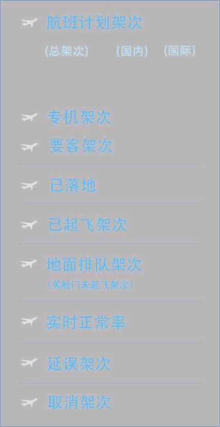
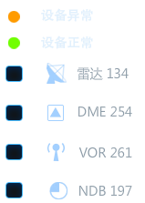

<!DOCTYPE html>
<html lang="en">
<head>
<meta http-equiv="Content-Type" content="text/html; charset=utf-8"/>
<title>航空路线图</title>
<script type="text/javascript" src="js/Cesium.js"></script>
<script type="text/javascript" src="js/jquery-1.9.1.js"></script>
<script type="text/javascript" src="js/swfobject.js"></script>
<link rel="stylesheet" type="text/css" href="style.css"/>
</head>
<body>
	<div id="map">
		<div id="cesiumContainer" class="fullSize"></div>
	</div>
	
    <div id="leftTop">
       <!---->
        <object id="FlashID" classid="clsid:D27CDB6E-AE6D-11cf-96B8-444553540000" width="323" height="623">
        <param name="movie" value="data/S3.swf" />
        <param name="quality" value="high" />
        <param name="swfversion" value="8.0.35.0" />
        <param name="allowScriptAccess" value="always" />
        <param name="wmode" value="transparent" />
        <embed src="data/S3.swf" quality="high" wmode="transparent" width="323" height="623" name="FlashID" align="middle" allowFullScreen="false" type="application/x-shockwave-flash" pluginspage="http://www.macromedia.com/go/getflashplayer"/>
        </object>

    </div>
    
    <div id="rightBottom">  
    	<!---->
    </div>
</body>
<script type="text/javascript">
	addSwf(0);
	viewer = new Cesium.Viewer('cesiumContainer', {
	    imageryProvider: new Cesium.WebMapServiceImageryProvider({
	        url: 'http://192.168.1.254:9080/geoserver/world_china/wms?service=WMS&version=1.1.0&request=GetMap&layers=world_china&styles=&srs=EPSG:4326&format=application/openlayers',
	        layers : 'world_china'
	    }),
	    animation: false, //动画控制不显示
	    baseLayerPicker: false,//图层控制显示
	    geocoder: false,//地名查找不显示
	    timeline: false
	});
                
    var fun;
	var class1=new Array();
	var class2=new Array();
	var calss3=new Array();
	class1=[1,2,3,4];
	class2=["low","high"];
	class3=["RADAR","VOR","NDB","DME"];
	function ExternalCall(json)
	{
		var showFlash=eval('(' + json + ')').showFlash;
		var chang=eval('(' + json + ')').chang;
		if(showFlash==undefined){
			change(fun,chang);
	     	flashData(chang);
		}else if(chang==undefined){
			if(showFlash==6){
				viewer.entities.removeAll();
		   		addSwf(0);
			}else{
				viewer.entities.removeAll();
				addSwf(showFlash);
		       	fun=showFlash+1;
			}
		}
	}
	
	
    function change(a,b){
    	if(a==1){
    		readJson(class1[b]);
    	}else if(a==2){
    		line(class1[b]);
    	}else if(a==3){
    		equipmentJson(class3[b]);
    	}else if(a==4){
    		surfaceJson(class2[b]);
    	}else if(a==5){
    		weatherJson(class1[b]);
    	}
    }

    viewer.camera.flyTo({//视角移动
        destination : Cesium.Cartesian3.fromDegrees(105.16, 35.71, 6500000)
    });
      
    var start = Cesium.JulianDate.fromDate(new Date(2015, 2, 25, 16));//设置开始时间
    var stop = Cesium.JulianDate.addSeconds(start, 660, new Cesium.JulianDate());//设置结束时间
    viewer.clock.startTime = start.clone();
    viewer.clock.stopTime = stop.clone();
    viewer.clock.currentTime = start.clone();
    viewer.clock.clockRange = Cesium.ClockRange.LOOP_STOP; //时间结束时重回开始时间
    viewer.clock.multiplier = 1;//时间推进速度

    function line(lineJson){//飞机飞行轨迹以及坐标实现
        var lineJsons="data/line"+lineJson+".txt";
        readJsonL(lineJsons);//飞行轨迹
        readJsonP(lineJsons);//飞行坐标 

        function readJsonL(lineJsons){
            $.getJSON(lineJsons,function(data){
                var x;
                for(x in data){//遍历出每一条轨迹
                    var dataLength = data[x].length;
                    var myPosition = new Array();
                    var myTime = new Array();
                    for(var i=0;i<dataLength;i++){//遍历出每一条轨迹的每一个点
                    	var loLen=data[x][i].lon.length;
                    	var lo1=data[x][i].lon.substr(0,loLen-4);
                    	var lo2=data[x][i].lon.substr(loLen-4,loLen);
                    	var lo3=lo2.substr(0,2)/60;
                    	var lo4=lo2.substr(2,4)/3600;
                    	var lo=parseFloat(lo1)+parseFloat(lo3)+parseFloat(lo4);
						var laLen=data[x][i].lat.length;
                    	var la1=data[x][i].lat.substr(0,laLen-4);
                    	var la2=data[x][i].lat.substr(laLen-4,laLen);
                    	var la3=la2.substr(0,2)/60;
                    	var la4=la2.substr(2,4)/3600;
                    	var la=parseFloat(la1)+parseFloat(la3)+parseFloat(la4);
                        myPosition[i] = Cesium.Cartesian3.fromDegrees(lo, la);
                        myTime[i] = Cesium.JulianDate.addSeconds(start, i*10, new Cesium.JulianDate());   
                    }
                    function computeCirclularFlight() {//将坐标点以及time添加成集合
                       var property = new Cesium.SampledPositionProperty();
                        property.addSamples(myTime, myPosition);
                        return property;
                    }
                    addLine(computeCirclularFlight());
                }
            })
        }

        function readJsonP(lineJsons){
            $.getJSON(lineJsons,function(data){
                var x;
                for(x in data){
                    var dataLength = data[x].length;
                    for(var i=0;i<dataLength;i++){
                        var routeIdentifier=data[x][i].routeIdentifier;
                        var loLen=data[x][i].lon.length;
                    	var lo1=data[x][i].lon.substr(0,loLen-4);
                    	var lo2=data[x][i].lon.substr(loLen-4,loLen);
                    	var lo3=lo2.substr(0,2)/60;
                    	var lo4=lo2.substr(2,4)/3600;
                    	var lo=parseFloat(lo1)+parseFloat(lo3)+parseFloat(lo4);
						var laLen=data[x][i].lat.length;
                    	var la1=data[x][i].lat.substr(0,laLen-4);
                    	var la2=data[x][i].lat.substr(laLen-4,laLen);
                    	var la3=la2.substr(0,2)/60;
                    	var la4=la2.substr(2,4)/3600;
                    	var la=parseFloat(la1)+parseFloat(la3)+parseFloat(la4);
                        addPoint(lo, la,routeIdentifier)  
                    }
                }
            })
        }
    }       
    
    function readJson(specie){//机场图标实现
        $.getJSON("data/all.txt",function(data){
            for(var i=0;i<207;i++){//遍历每个机场
                var Rand = Math.random()*10; 
                if(Rand>=5){//随机为机场分配同一个图标的不同颜色
                    var weather="g";
                }else if(5>Rand && Rand>=3){
                    var weather="y";
                }else if(3>Rand && Rand>=1){
                    var weather="o";
                }else if(Rand<1){
                    var weather="r";
                }
                var type=data[i].type;
                var icon=data[i].icon;
                var airportName=data[i].airportName;
                if(specie==icon){
                    var iconUrl="js/Assets/Textures/maki/"+weather+icon+".png";
                    addSpace(data[i].lng, data[i].lat,airportName,iconUrl);
                }else if(specie==" "){
                    addPoint(data[i].lng, data[i].lat,airportName);
                }
            }
        })
    }


    function weatherJson(specie){//天气图标实现
        $.getJSON("data/all.txt",function(data){
            for(var i=0;i<207;i++){
                var Rand = Math.random()*25; 
                Rand = Math.round(Rand);
                Rand>=21?Rand=21:Rand=Rand;
                var icon=data[i].icon;
                var airportName=data[i].airportName;
                if(specie==icon){
                    var iconUrl="js/Assets/Textures/maki/w"+Rand+".png";
                    addSpace(data[i].lng, data[i].lat,airportName,iconUrl);
                }else if(specie==" "){
                    addPoint(data[i].lng, data[i].lat,airportName);
                }
            }
        })
    }


    function equipmentJson(facility){//设备图标实现
        $.getJSON("data/equipment.txt",function(data){
            for(var i=0;i<data.length;i++){
                var Rand = Math.random()*10; 
                if(Rand>=4){
                    var weather="g";
                }else if(4>Rand){
                    var weather="o";
                }
                var facilityType=data[i].facilityType;
                var equipmentName=data[i].equipmentName;
                if(facility==facilityType){
                    var iconUrl="js/Assets/Textures/maki/"+weather+facilityType+".png";
                    var lnN1=data[i].longitude.indexOf(",");
                    var ln1=data[i].longitude.substr(1,lnN1-1);
                    var ln2=data[i].longitude.substr(lnN1+1,lnN1+5);
                    var lnN2=ln2.indexOf(",");
                    var ln3=ln2.substr(0,lnN2)/60;
                    var ln4=ln2.substr(3,5)/3600;
                    var ln=parseFloat(ln1)+parseFloat(ln3)+parseFloat(ln4);
                    var laN1=data[i].latitude.indexOf(",");
                    var la1=data[i].latitude.substr(1,laN1-1);
                    var la2=data[i].latitude.substr(laN1+1,laN1+5);
                    var lnN2=la2.indexOf(",");
                    var la3=la2.substr(0,lnN2)/60;
                    var la4=la2.substr(3,5)/3600;
                    var la=parseFloat(la1)+parseFloat(la3)+parseFloat(la4);
					console.log(ln+"+++"+la)
                    addSpace(ln, la,equipmentName,iconUrl);
                }
            }
        })
    }


    function surfaceJson(le){//地图面积实现
        $.getJSON("data/surface.txt",function(data){
            for(x in data){
                var level=data[x].level;
                if(le==level){
                    var geo=new Array();
                    var newGeo=new Array();
                    var myName=data[x].cnName;
                    for(var i=0;i<data[x].geographic.length;i++){
                        geo[i]=data[x].geographic[i][0];
                    }
                    geo=geo.join(",");
                    geo=geo.split(",");
                    for(x in geo){
                        newGeo.unshift(parseInt(geo[x])/10000);
                    }
                    addSurface(newGeo,myName);
                }
            }
        })
    }


    function addSpace(x,y,airportName,iconUrl){//添加图标方法（横坐标，纵坐标，坐标名称，图片地址）
        viewer.entities.add({
                position : Cesium.Cartesian3.fromDegrees(x,y),
                name : airportName,
                billboard : {
                    image : iconUrl,
                    scale : 0.8,
                    horizontalOrigin : Cesium.HorizontalOrigin.CENTER,
                    verticalOrigin : Cesium.VerticalOrigin.BOTTOM,
                    scaleByDistance : new Cesium.NearFarScalar(1.5e2, 2.0, 1.5e7, 0.5)
                }
        });
    }


    function addPoint(x,y,z){//添加点方法（横坐标，纵坐标，坐标名称）
        viewer.entities.add({
            position : Cesium.Cartesian3.fromDegrees(x,y),
            name : z,
            point : {
                pixelSize : 4,
                color : Cesium.Color.YELLOW,
                outlineWidth : 1,
                scaleByDistance : new Cesium.NearFarScalar(1.5e2, 2.0, 1.5e7, 0.5)
                }
        });            
    }


    function addLine(myPosition){//添加轨迹方法（封装好的时间位置集合）
        viewer.entities.add({
           availability : new Cesium.TimeIntervalCollection([new Cesium.TimeInterval({
                start : start,
                stop : stop
            })]),
            position : myPosition,
            orientation : new Cesium.VelocityOrientationProperty(myPosition),
            model : {
                uri : "js/Assets/Textures/maki/Cesium_Air.gltf",
                minimumPixelSize : 20,
            },
            path : {
                material:Cesium.Color.YELLOW.withAlpha(1)
            }
        }); 
    }


    function addSurface(position,myName){//添加面方法 
        viewer.entities.add({
            name : myName,
            polygon : {
                hierarchy : Cesium.Cartesian3.fromDegreesArray(position),
                material : Cesium.Color.fromRandom({alpha : 0.5}),
                outline : true,
                outlineColor : Cesium.Color.WHITE,
            }
        });     
    }
    
    function encapsulation(sum){
    	var obj = new Object(); 
	    obj.cmd = "setSelect";
	    obj.idx = sum; 
	    obj.value = true; 
	    var json1 = JSON.stringify(obj);
	    return json1;
    }
    function flashData(sum){
    	var json1=encapsulation(sum);
        var flash = document["FlashID2"];
        flash.ExternalCall(json1);
    }
 
function addSwf(call){  
    if(call==0){
        var flWid=159;
        var flHei=347;
        var flNa="S2_1_airport_rb";
    }else if(call==1){
        var flWid=114;
        var flHei=86;
        var flNa="S2";
    }else if(call==2){
        var flWid=150;
        var flHei=210;
        var flNa="S2_2_airfac_rb";
    }else if(call==3){
        var flWid=140;
        var flHei=200;
        var flNa="S2_4_airspace_rb";
    }else if(call==4){
        var flWid=160;
        var flHei=350;
        var flNa="S2_4_airWeather_rb";
    }
        
    var fl1="<object id='FlashID2' classid='clsid:D27CDB6E-AE6D-11cf-96B8-444553540000' width='"+flWid+"' height='"+flHei+"'>"
    var fl2="<param name='movie' value='data/"+flNa+".swf' />"
    var fl3="<param name='quality' value='high' />"
    var fl4="<param name='swfversion' value='8.0.35.0' />"
    var fl5="<param name='allowScriptAccess' value='always' />"
    var fl6="<param name='wmode' value='transparent' />"
    var fl7="<embed src='data/"+flNa+".swf' quality='high' wmode='transparent' width="+flWid+" height="+flHei+" name='FlashID2' align='middle' allowFullScreen='false' type='application/x-shockwave-flash' pluginspage='http://www.macromedia.com/go/getflashplayer'/>"
    var addFl=fl1+fl2+fl3+fl4+fl5+fl6+fl7;
    document.getElementById("rightBottom").innerHTML=addFl;
}
</script>
</html>